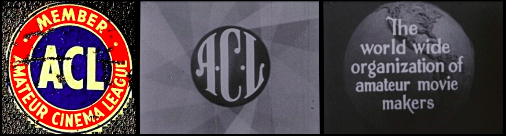

Ten Amateur Films
Ten Cities through the Lens of Amateur Cine Clubs
A curated selection conceived by Walter Forsberg, Kimberly Tarr, Kathleen Maguire, & Dan Streible
Title (producer, date) • Holding • Notes by
Another Day (Leslie Thatcher, Toronto Amateur Movie Club, 1934) • Archives of Ontario • Charles Tepperman. Digitized by Bitworks Toronto
Everyone’s Coming to the Guild! (Robbins Barstow, 1943) • NYU Libraries • Kathryn Gronsbell
EPH 4/21/16 (Ephraim Horowitz, 1979) • Horowitz family • Kimberly Tarr and Dan Erdman
Main Sreet Soldier (Leonard Yakir, Winnipeg Film Group, 1972) • Walter Forsberg
Moods of a City (Westwood Movie Club, 1972) • PFA • Melinda Stone. Digitized by Movette Film Transfer, San Francisco
Na odnoi Zemle / On the Same Earth (People's Film Studio at DK Proftekhobrazovania, Leningrad, 1976) • Maria Vinogradova
Poem of Montclair (O. P. Geer, 1933) • Northeast Historic Fim • Kimberly Tarr
The Augustas (Scott Nixon, 195?) • University of South Carolina MIRC • Heidi Rae Cooley
Watch it via the MIRC DVR.
Caperucita Roja / Little Red Riding Hood (Jorge Mendez Delfino, 1933) • Museo del Cine, Buenos Aires • Andrés Levinson
and . . . .
* * * * * * * * * * * * * * * * * * * * * * * * * * * * * * * * * * * * * *